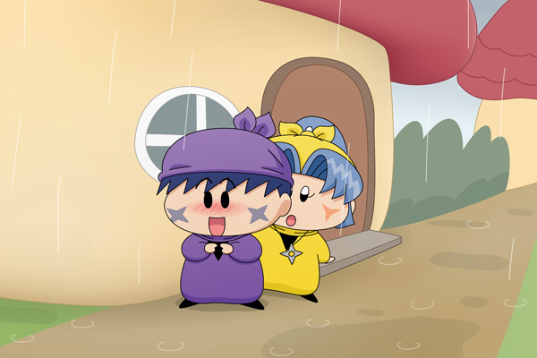

ヤマネ「雨がなかなか止まないでございますね・・・」
サスケ「・・・このままずっと止まなくてもいいんだぜ・・」
ヤマネ「え？そうでございますか？」
サスケ「い、いや、こっちの話だぜ・・」
掲示板での梨璃さんのカキコ「お題に挑戦！」の影響を受け、私も同じお題に挑戦したいと思います。お題は梨璃さんと同じく『シチュエーションで10題』になります（+++ Clear Motif +++様からお借りしました）。
第１回目のお題は「雨宿り」です。
今日は妖精界での修行ですが、向かう途中に突然雨が降ってきました。サスケは慌てて家の屋根に隠れます。するとヤマネも後からやってきて、一緒に雨宿り…という設定になります。
ヤマネはサスケの初恋相手であり、そしてすでに失恋済み(^◇^;)。しかしたとえ望みが無くても、初恋の相手は特別な存在なんですよね。サスケにはこの雨宿りがまるでデートのように見えています。煩悩の多いサスケはやっぱり妖精忍者には向いていないのかも・・・。
次回のお題は「荷物を持つ」です。
(2012/8/4)